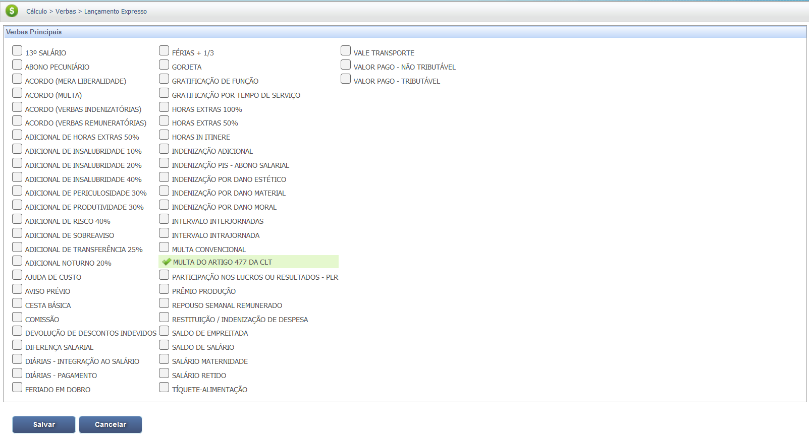
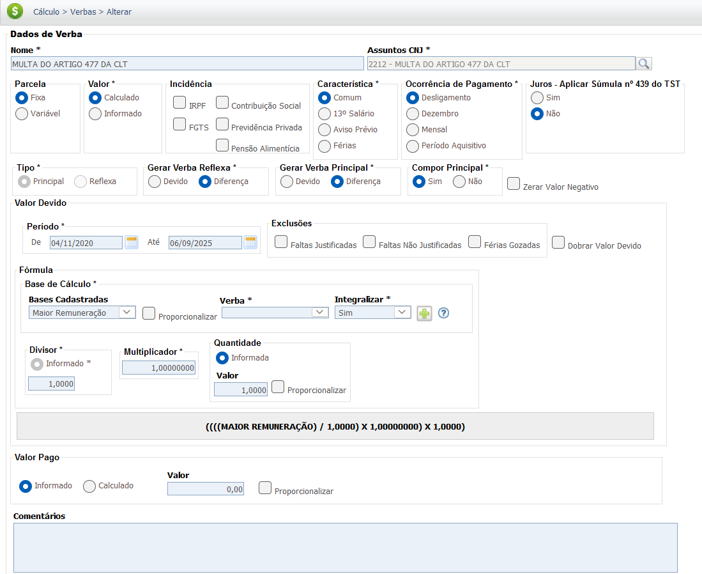
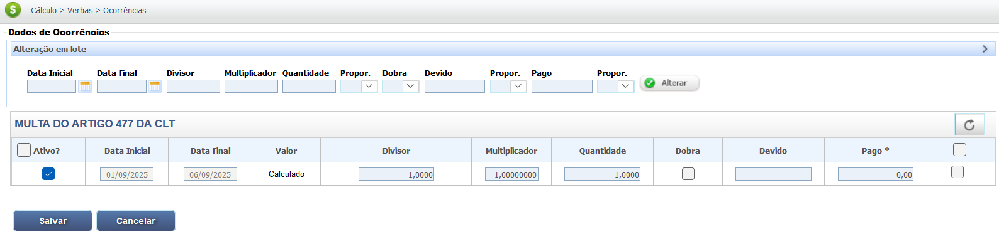

Multa do Artigo 477 da CLT
A multa prevista no Art. 477, § 8º, da Consolidação das Leis do Trabalho (CLT) é uma penalidade aplicada ao empregador que atrasar o pagamento das verbas rescisórias, o que inclui a não entrega dos documentos de rescisão nos prazos legais. A infração do prazo estabelecido no § 6º do mesmo artigo sujeita o empregador a pagar, a favor do empregado, uma multa em valor equivalente ao seu salário.
Base Legal e Fato Gerador
CLT - Art. 477, § 6º e § 8º:
- O prazo para pagamento das verbas rescisórias e entrega dos documentos é de 10 (dez) dias contados a partir do término do contrato (incluindo o aviso prévio, trabalhado ou indenizado).
- O fato gerador da multa é o mero descumprimento do prazo do § 6º. A multa equivale a um salário do empregado, devidamente corrigido.
- Exceção à Multa: A multa não será aplicada quando, comprovadamente, o trabalhador der causa à mora, por exemplo, não comparecendo para receber ou assinar a documentação.
Em resumo, trata-se de uma penalidade de natureza indenizatória, que visa punir o empregador pela mora no acerto final. O valor é fixo e corresponde ao último salário do empregado.
Base Legal e Jurisprudência
O direito à Multa do Art. 477 da CLT é fundamentado na legislação e consolidado pela jurisprudência do Tribunal Superior do Trabalho (TST), focando no prazo de pagamento e na base de cálculo da penalidade.
Fontes Normativas (CLT)
Consolidação das Leis do Trabalho (CLT):
- Art. 477, § 6º (Prazo):
A entrega ao empregado de documentos que comprovem a comunicação da extinção contratual aos órgãos competentes e o pagamento dos valores constantes do instrumento de rescisão ou recibo de quitação deverão ser efetuados até dez dias contados a partir do término do contrato.
- Art. 477, § 8º (Penalidade):
A inobservância ao disposto no § 6º deste artigo sujeitará o infrator a pagar ao trabalhador uma multa, a favor do empregado, em valor equivalente ao seu salário, devidamente corrigido pelo índice oficial de inflação.
Jurisprudência (Súmulas e Orientações Jurisprudenciais do TST)
Fato Gerador da Multa
Súmula nº 330, II, do TST (Valor Base):
"O valor a ser considerado para a multa a que se refere o § 8º do art. 477 da CLT é o maior salário contratual (remuneração)."
Súmula nº 387, TST (Mora):
O simples ajuizamento de ação judicial por parte do empregado para questionar o valor ou a natureza de verbas rescisórias não afasta, por si só, a incidência da multa do art. 477, § 8º, da CLT, exceto se comprovada a mora do empregado.
Controvérsias e Exceções
Súmula nº 405 do STJ (Antiga Lei 7.855/89):
A Súmula do STJ (e o entendimento consolidado na Justiça do Trabalho) estabelece que a multa não é devida quando o empregado é quem dá causa ao atraso no recebimento das verbas rescisórias (ex.: ausência injustificada no ato da homologação, etc.).
Base de Cálculo e Deduções
IMPORTANTE: A Multa do Art. 477 tem natureza indenizatória. Por isso, não há incidência de Imposto de Renda Retido na Fonte (IRRF) ou contribuição para o Instituto Nacional do Seguro Social (INSS).
Definição do Valor
O valor da multa é equivalente a um mês de salário do empregado, conforme Súmula 330, II, do TST, que considera o maior salário contratual.
O cálculo é direto: o último salário (remuneração) que serviu de base para a rescisão é o valor da multa.
Composição do Salário Base:
O salário deve ser entendido em seu sentido mais amplo (Remuneração), incluindo:
- Salário Base.
- Comissões, gratificações, ou adicionais habituais (como horas extras, adicional noturno, insalubridade, etc.).
Exemplo Prático (Valor Bruto)
Se a última remuneração do empregado foi de R$ 2.500,00, este será o valor da multa:
Remuneração Média (Salário) do Empregado: R$ 2.500,00
Valor da Multa do Art. 477 da CLT = R$ 2.500,00
Dessa forma, o valor da multa é R$ 2.500,00, sem aplicação de descontos obrigatórios (INSS e IRRF).
| Item | Valor |
|---|---|
| Salário/Remuneração Base | R$ 2.500,00 |
| Dedução INSS e IRPF | R$ 0,00 |
| Valor Líquido da Multa | R$ 2.500,00 |
Calculadora (Simulação)
Utilize esta ferramenta para estimar o valor da Multa do Art. 477 da CLT, que é equivalente a um salário do empregado.
Resultados:
Valor da Multa: R$ 0,00
Lançamento no PJe-Calc
A seguir, confira o passo a passo para o lançamento da verba MULTA DO ARTIGO 477 DA CLT no PJe-Calc, utilizando a opção "Expresso":
-
Acessar Verbas e Escolher Lançamento: No menu de
navegação à esquerda, clique na opção Verbas para iniciar o lançamento. Após o
comando,
será exibida a tela para escolha do Lançamento da Verba. Escolha a opção Expresso.

- Seleção da Verba: O sistema abrirá as opções de verbas, escolha a verba Multa do Artigo 477 da CLT e clique no botão Salvar 
-
Quadro de Verbas e Ações: O sistema exibirá um quadro
com os campos:
- Ações - contendo as opções de configurações da verba selecionada (parâmetros,
ocorrências e
exclusão)

-
- Parâmetros da Verba

-
- Ocorrências da Verba

-
- Excluir

- Verba Principal - verba selecionada para lançamento.
- Verba Reflexa - em que ao clicar no botão Exibir serão listadas todas as verbas reflexas ligadas a Verba Principal.
- Parametrização da Verba: Ao clicar no botão Parâmetros da Verba serão exibidas todas as configurações necessárias para a parametrização da Verba Principal. 
- Registro de Ocorrências: Ao clicar no botão Ocorrências da Verba serão exibidas todas as configurações necessárias para registro das ocorrências da Verba Principal. 